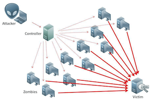
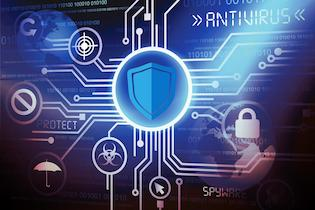

Malware

A malware is a software program that is designed to damage or disrupt a computer. There are many types of malware and they may be encountered
when using the internet. However, the only ones you have to learn are:
The others are:
- Ransomware - Blackmailing
- Adware - Spams ads
- Worms - Spread across computers
- Trojans - Sneak malware into computers
- Botnets - Turn PCs into zombies
Virus
Viruses are programs that are downloaded into a PC without the user's knowledge or permission, designed specifically to harm the computer
and corrupt the files on it.
The most common virus replicates itself over and over again until this brings the computer system to a halt.
Viruses are usually spread via sharing files and attachments, especially through emails.

Examples:
- Creeper Virus - A test that did not intend to harm the computer but flood the message "I'm the creeper, catch me if you can!"
- WannaCry - A ransomware attack in 2017 that infected 200,000 computers in 150 countries using the EternalBlue cyberattack.
And their counters are:
- Reaper - Once it is ran, the Creeper virus gets deleted and the computer is not harmed in any way.
- WannaCry Killswitch - A killswitch that is discovered by researcher Marcus Hutchins which prevents the malware by registering a
domain name.
Spyware
Spywares are softwares that are created to collect information on a user's computer through its internet connection. Just like viruses,
this is done without the user's knowledge or permission. This data is then usually sold unlawfully for marketing purposes.
Information that can be collected are:
- Passwords
- Bank Details
- Credit Card Details
- Identification Details
It is often downloaded from untrustworthy websites and hides inside the data downloaded, infecting it in the process.
This means it may also reduce bandwidth availbaility in internet connections.

Hacking and DDoS
Hacking is the process where unauthorised and/or unlawful access to a network or computer is gained by a person, known as a hacker. This is us-
ually done by searching for a weakness in the computer system and then use this to enter it. They can be done for many reasons.
There are two types of hackers. These are:
- White Hat Hackers - They expose security issues in a network or system not for unlawful reasons. They can be hired by organisations.
- Black Hat Hackers - They do the same thing but for unlawful reasons. These, if caught, will be set a charge.

The Distributed Denial of Service is a type of network attack that floods a server with requests and disrupts its service eventually from the volume of traffic.

There are many who had been attacked by the Service. Below is a bar chart of the number of attacks in the recent years:

Protection Against These Risks
To protect against malware, hacking, DDoS and other cyberattacks, you can use the following protection methods:
- Anti-Virus Softwares
- Firewalls
- Keeping an eye out about phishing and social engineering

Anti-virus softwares, as the name suggests, are softwares used to prevent, scan, detect and delete viruses which runs automatically so as to provide real-time protection against these virus attacks once installed. They cannot prevent the entry of an attack but they can detect and
remove it.
Firewalls are hardware or software systems that protects unauthorised access to a computer or network by blocking their transmissions. These include:
- Packet filters - A filter that checks the source and destination IP addresses to determine whether to allow or disallow packets by applying
its rules there.
- Stateful inspection - Collects data from every connection made to a network, checks its qualities to see whether the connection is safe, keeps a list of the safe connections and inspect them to see if there is malicious code inside.
- Proxy server firewalls - A gate between the user and the internet and ke-
eps the user safe by filtering out unsafe content, therefore maintaining privacy due to its different IP address.

Phishing is a type of email that is sent to induce users to revealing their private information. The most common ones, called deceptive phishing, use threats and a sense of urgency in the emails to scare the users into doing what the attackers want.
Social engineering is a psychological manipulation method to make people exploiting information so as to find a way to hack into your software.
The most common ones use the phishing technique mentioned above.